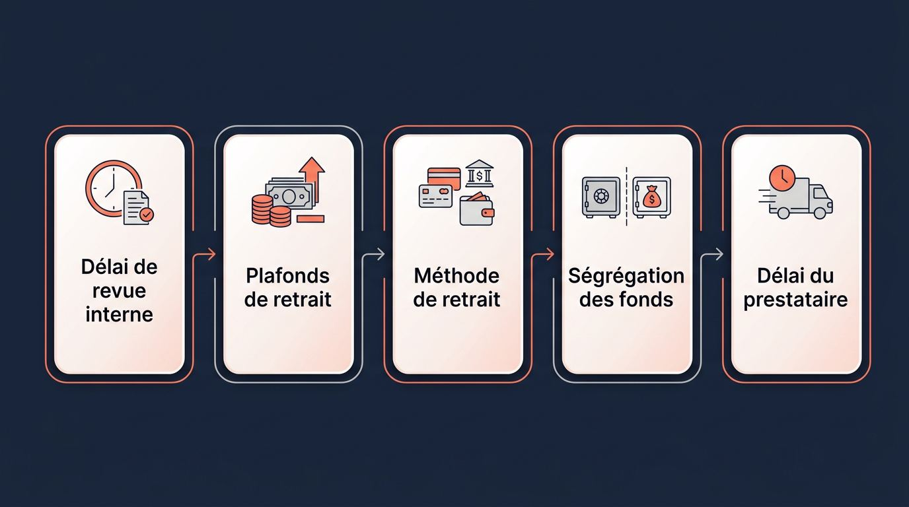
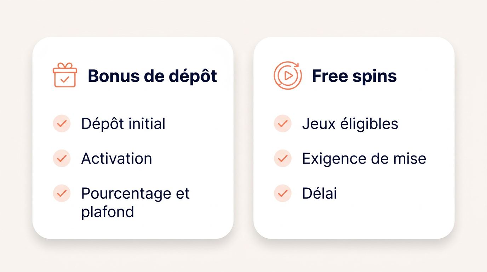
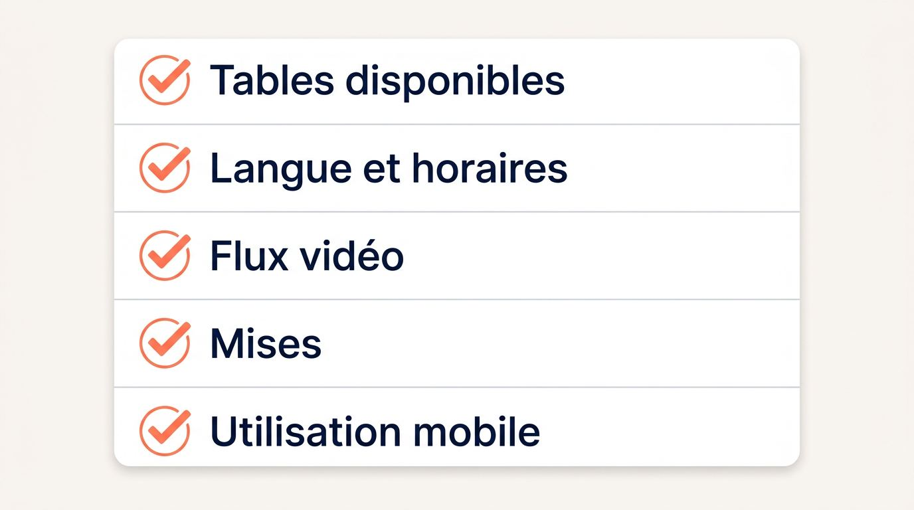
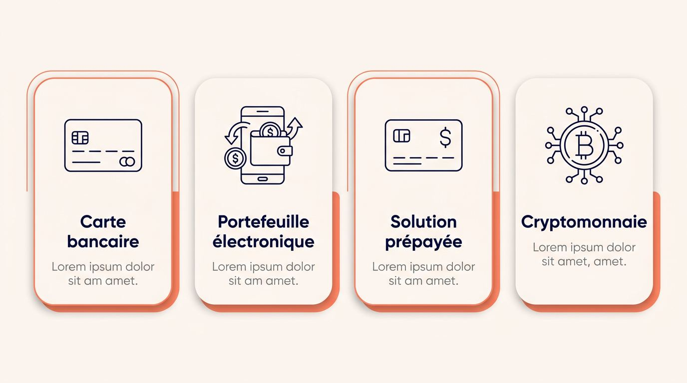
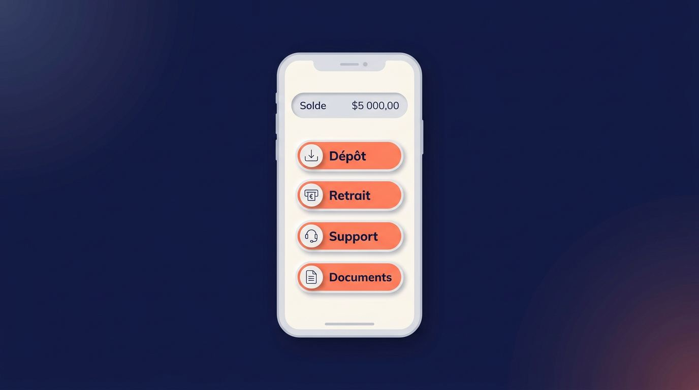

Avant de créer un compte sur un nouveau casino en ligne, vérifiez ce que votre premier dépôt vous permettra réellement de retirer. Une offre de bienvenue élevée perd vite de son intérêt si les conditions de mise, les plafonds de retrait ou les méthodes de paiement restent flous. Privilégiez des règles publiées, un retrait praticable depuis la France et un support capable de répondre lors d’une vérification de compte.
Cette liste des nouveaux casinos en ligne est régulièrement revue afin de refléter les sites accessibles depuis la France et les conditions publiées au moment de la comparaison.
Plateformes à comparer
Les offres sont chargées automatiquement depuis la source du comparatif.
Qu’est-ce qui définit un nouveau casino en ligne
Un tout nouveau casino peut correspondre à une marque créée récemment, au dernier casino en ligne lancé par un groupe déjà actif, ou à une plateforme relancée sous une autre identité. La date de lancement d’un casino en ligne, l’entreprise qui l’exploite et les éventuels changements de propriété permettent d’estimer le recul opérationnel disponible avant l’inscription.
Les marques récemment lancées
Une marque récemment lancée possède une date de lancement publique et vérifiable, mais un historique de fonctionnement encore court. Les avis sur les nouveaux casinos en ligne sont utiles lorsqu’ils décrivent des faits cohérents sur les comptes, les paiements ou les délais, plutôt qu’une appréciation générale laissée par quelques joueurs.
Avant votre dépôt, vérifiez les premiers éléments disponibles :
- une date de lancement confirmable dans les pages légales ou les communications de l’opérateur ;
- des retours récurrents sur les retraits et non une simple note globale ;
- des réponses du support qui traitent les demandes de compte et de paiement ;
- des témoignages récents décrivant des situations comparables avec des détails précis.
Les nouvelles marques de groupes établis
Une nouvelle marque peut être exploitée par un groupe disposant déjà d’un historique de paiements et de support. L’ancienneté visible du site ne suffit donc pas à juger si vous avez affaire à un casino en ligne fiable.
Cherchez l’identité de l’opérateur de casino dans le pied de page et les mentions légales. Vous devez pouvoir localiser le nom de la société, son adresse, ses autres marques et ses informations de contact. Cette vérification permet de distinguer une ligne fiable soutenue par une structure connue d’une marque dont la responsabilité reste difficile à identifier.
Les casinos renommés ou relancés
Une nouvelle plateforme de casino en ligne peut résulter d’un changement de nom ou d’une refonte complète, sans constituer un service entièrement nouveau. Parmi les nouveaux sites de casino en ligne, un casino en ligne récent peut donc conserver une partie de son historique technique ou commercial.
Examinez les changements intervenus lors de la relance. Un nouveau propriétaire, des conditions modifiées, des prestataires de paiement remplacés ou une licence affichée différente peuvent influencer le dépôt, le retrait, l’accès au compte et la valeur des promotions. Une interface actualisée ne renseigne pas, à elle seule, sur ces éléments.
Les expériences conçues pour les joueurs français
Un nouveau casino en ligne français doit démontrer son adaptation par ses communications et ses services accessibles depuis la France. Cette adaptation repose sur des communications et des services accessibles depuis la France, au-delà d’un habillage aux couleurs françaises ou d’une traduction automatique.
- Consultez les conditions générales, les règles de bonus et les courriels de compte en français.
- Vérifiez qu’un service client multilingue propose un support natif en français pour les demandes complexes, au-delà des outils de traduction intégrée.
- Contrôlez les horaires du support selon le fuseau français et les moyens de paiement disponibles pour votre résidence.
- Lisez les exclusions géographiques et les plafonds promotionnels, qui peuvent varier selon le pays du joueur.
Comment nous évaluons les nouveaux casinos pour la France
Notre classement des nouveaux casinos en ligne accorde davantage de poids à la fiabilité des retraits, à la lisibilité des conditions, au support et à l’historique opérationnel qu’au montant d’un bonus. Pour repérer un nouveau casino en ligne fiable et sécurisé, vous pouvez suivre les preuves visibles dans le pied de page, les pages de paiement, les conditions et les informations de support.

La fiabilité des paiements et les conditions de retrait
Avant un premier dépôt, consultez les délais internes, les limites applicables et la disponibilité réelle des méthodes pour les résidents français.
- Vérifiez le délai de revue interne indiqué avant le traitement d’un retrait de casino en ligne.
- Consultez les plafonds quotidiens, hebdomadaires et mensuels, car ils peuvent ralentir l’encaissement d’un montant élevé.
- Confirmez que votre méthode de dépôt permet aussi un retrait et qu’elle est accessible depuis la France.
- Recherchez les informations sur la ségrégation des fonds des joueurs, lorsqu’elles sont publiées, ainsi que les prestataires reconnus et le protocole 3D Secure applicable.
- Distinguez le délai de paiement du casino du délai de traitement propre à votre prestataire.
Le chiffrement SSL protège les échanges de données ; lisez aussi les plafonds et les règles de retrait.
L’identité de l’opérateur et les licences internationales
L’entreprise exploitante et la licence affichée constituent les premières informations à localiser avant de créer un compte. Un casino en ligne sécurisé publie normalement ces données dans son pied de page, avec les mentions légales et une voie de recours liée à sa licence.
| Élément à comparer | Licence de la Malta Gaming Authority | Licence de jeux de Curaçao |
|---|---|---|
| Informations à chercher | Société, numéro de licence, juridiction et procédure de plainte | Société, numéro de licence, juridiction et procédure de plainte |
| Contrôle de l’opérateur | Vérifiez le lien vers les informations de la MGA et les pages légales | Vérifiez l’autorité mentionnée, la société responsable et les pages légales |
| Recours potentiel | Recherchez la procédure de réclamation publiée par l’opérateur | Recherchez les modalités de réclamation ou de médiation prévues |
| Contrôles techniques | Consultez les références à un RNG certifié et à un audit de casino indépendant | Consultez les références à un RNG certifié et à une certification technique |
La vérification de la licence du casino consiste à recouper le numéro, la juridiction et la société affichée. Une licence internationale offre un cadre de contrôle et un recours potentiel, sans constituer une autorisation française.
Les clauses qui changent la valeur d’une offre
Des clauses restrictives peuvent réduire la part de votre solde ou de vos gains que vous pourrez demander en retrait. Elles participent directement à la protection des joueurs lorsque le casino les publie clairement et les applique de manière cohérente.
- Confiscation du solde : cette règle peut entraîner la suppression de fonds en cas de compte inactif, de document manquant ou de condition non respectée.
- Gain maximal : un plafond peut limiter le montant encaissable après une offre ou un bonus.
- Jeux restreints : certains jeux peuvent être exclus d’une promotion ou contribuer différemment aux exigences.
- Conditions modifiées : vérifiez la date de mise à jour et l’existence d’une information préalable sur les changements promotionnels.
La qualité du service client en français
Un service client en français devient utile dès qu’une vérification, un retrait ou un accès au compte nécessite une réponse précise. La présence d’une icône de langue ne garantit pas que le support traite les incidents complexes.
- Vérifiez les canaux proposés, tels que le chat, l’e-mail et le formulaire de contact.
- Consultez les horaires publiés et leur compatibilité avec la France.
- Demandez si le service client de casino français peut répondre en français à une question sur le KYC, un paiement ou un compte bloqué.
- Évaluez la clarté de la réponse reçue plutôt que la présence d’un assistant automatique.
Les premiers signaux de réputation
Un casino récent possède peu de recul public, ce qui rend les retours répétitifs plus utiles qu’une note moyenne. Pour savoir comment reconnaître un casino en ligne fiable, privilégiez les commentaires datés qui décrivent les retraits, les vérifications, l’accès au compte ou une modification récente des conditions.
Les indices de confiance communautaire reposent sur des faits qui reviennent avec des détails comparables. Un comparatif de casino en ligne trop promotionnel laisse souvent de côté les limites, utilise des conditions vagues ou annonce des bonus sans citer les règles applicables.
- Comparez des avis récents portant sur le même type de paiement ou de retrait.
- Recherchez des détails cohérents sur les délais, documents demandés et réponses du support.
- Écartez les évaluations uniformément positives qui ne mentionnent aucune condition.
- Contrôlez si un changement d’opérateur ou de conditions coïncide avec des plaintes répétées.
Des bonus de bienvenue vraiment utilisables
La valeur d’un bonus de bienvenue de casino dépend des règles qui permettent de transformer des gains en fonds retirables. Avant d’utiliser un code promo de casino ou un bonus sans dépôt, examinez les conditions qui s’appliquent à votre dépôt, à vos mises et à votre retrait potentiel.

Les bonus de dépôt et les exigences de mise
Les exigences de mise correspondent au montant total que vous devez parier avant de retirer les gains liés à un bonus. Les conditions de mise du bonus se lisent dans l’ordre où elles s’appliquent après le dépôt.
| Condition typique | Ce qu’il faut contrôler |
|---|---|
| Dépôt initial | Le montant requis et les méthodes de paiement éligibles |
| Activation | La nécessité d’un code, d’une inscription ou d’une validation |
| Pourcentage et plafond | La somme maximale réellement ajoutée au solde |
| Jeux éligibles | La contribution des machines et des autres jeux aux mises |
| Exigence de mise | Le volume à parier avant toute demande de retrait |
| Délai | La période accordée pour remplir les conditions |
Le RTP, ou taux de retour au joueur, indique un retour théorique calculé sur une longue période. La volatilité décrit l’amplitude et le rythme possibles des résultats sur les machines pendant le jeu. Ni le RTP ni le score de volatilité des machines à sous ne prédisent votre session, même lorsque le générateur de nombres aléatoires, ou RNG, est certifié.
Les free spins et les paris gratuits
Les free spins et les paris gratuits donnent accès à une promotion, mais leur valeur dépend des conditions attachées aux gains. Les tours gratuits sur des machines et les paris sur des marchés sportifs suivent souvent des règles distinctes.
- Vérifiez la valeur de chaque free spin ou pari gratuit.
- Consultez les machines, marchés et cotes autorisés par l’offre.
- Recherchez le plafond de gain applicable aux tours gratuits.
- Contrôlez l’éventuelle exigence de mise sur les gains obtenus.
- Distinguez un bonus sans dépôt de free spins d’une offre de paris gratuits, car les règles de retrait peuvent différer.
Le cashback et les offres de remboursement
Un bonus cashback de casino se compare à partir de sa période de calcul, de la définition de la perte nette et du statut des fonds crédités. Pour évaluer une offre affichant un pourcentage de remboursement, consultez ces informations.
- Vérifiez la période prise en compte pour calculer les pertes nettes.
- Consultez le plafond de cashback applicable à votre compte.
- Identifiez si le remboursement arrive en espèces retirables ou en crédit bonus.
- Recherchez une exigence de mise sur les fonds remboursés.
- Contrôlez les limites personnalisées sur les bonus, qui peuvent réduire le montant disponible pour jouer.
Les clauses à vérifier avant d’accepter un bonus
L’acceptation d’un bonus doit suivre la lecture de ses conditions complètes, car certaines restrictions prennent effet dès son activation. Les conditions de bonus de casino peuvent aussi exclure certains moyens de paiement ou certaines résidences.
- Vérifiez le retrait maximal et le plafond de gain associés au bonus.
- Contrôlez les méthodes de dépôt exclues de l’offre.
- Consultez les schémas de mise interdits et les jeux restreints.
- Vérifiez les exclusions géographiques applicables aux résidents français.
- Recherchez la procédure permettant d’annuler le bonus avant de jouer avec les fonds concernés.
Plafond d’encaissement : une clause de gain maximal ou de retrait maximal peut limiter la somme encaissable issue d’un bonus, même lorsque le solde affiché est supérieur.
Les jeux et tables en direct à comparer
Un catalogue utile présente des fournisseurs identifiables, des informations de jeu visibles, des fourchettes de mise adaptées et une performance technique stable. Les nouveaux jeux de casino méritent votre attention lorsqu’ils restent accessibles sur votre appareil et que leurs conditions sont clairement affichées, y compris dans le casino en direct.

Les machines à sous et la diversité des fournisseurs
Un catalogue crédible de machines à sous en ligne affiche ses studios, renouvelle ses sorties et donne accès aux informations essentielles de chaque jeu. La quantité de machines importe moins que la possibilité de vérifier leur disponibilité et leurs caractéristiques.
- Identifiez les fournisseurs de jeux présentés dans le catalogue.
- Vérifiez la fréquence d’arrivée des nouveaux jeux de casino et la mise à jour des filtres.
- Consultez le RTP et la volatilité lorsqu’ils apparaissent dans la fiche des machines.
- Contrôlez les limites de mise avant de lancer une session.
- Considérez les jeux exclusifs ou les studios boutique destinés au marché francophone uniquement lorsque leur accès est explicitement confirmé pour les joueurs français.
Les jeux de table et la qualité du casino en direct
Après les machines, les jeux de table en ligne exigent un contrôle plus technique, car l’expérience dépend directement de votre connexion. Un casino en direct doit proposer des formats variés, une diffusion stable, une latence limitée, des langues identifiables et des mises compatibles avec votre budget.
| Catégorie | Vérifications utiles |
|---|---|
| Tables disponibles | Roulette, blackjack, baccarat et autres jeux avec croupier en direct réellement ouverts aux résidents français |
| Langue et horaires | Présence éventuelle de croupiers francophones et plages de diffusion compatibles avec vos habitudes |
| Flux vidéo | Qualité d’image, stabilité, décalage entre la mise et l’action affichée |
| Mises | Montants minimaux et maximaux par table, notamment sur les tables VIP |
| Utilisation mobile | Consommation de données et fluidité sur Wi-Fi, 4G et 5G |
Sur mobile, testez d’abord une table sans engager de mise importante afin d’observer la qualité réelle du flux.
Les jackpots et les promesses de gros gains
Les jackpots de casino en ligne n’ont d’intérêt pratique que si les règles de paiement d’un gain important sont accessibles avant de jouer. Vérifiez la participation effective de la machine au jackpot progressif, les clauses de gain maximal, les plafonds de retrait et la procédure prévue pour les paiements élevés.
- Confirmez que la machine participe bien au réseau de jackpot annoncé.
- Lisez les règles relatives aux gains maximums et aux limites de retrait applicables.
- Cherchez une procédure écrite pour le traitement d’un retrait exceptionnel.
- Prenez en compte une assurance ou une garantie de paiement des jackpots progressifs uniquement lorsqu’elle est clairement publiée par l’opérateur.
Les règles de réception des fonds doivent être consultées avant de jouer sur une machine affichant un jackpot.
L’innovation dans les jeux sans promesses creuses
Un casino en ligne innovant doit apporter une amélioration visible dans votre usage, comme une navigation plus claire, une mécanique de jeu confirmée ou un contenu exclusif accessible. Évaluez les nouvelles sorties, les missions intégrées et les systèmes de récompense selon leur disponibilité réelle sur votre compte.
Les références à la réalité virtuelle, à l’intelligence artificielle ou à la personnalisation automatisée doivent correspondre à une fonction utilisable et documentée. Un chatbot ou une promesse de recommandation personnalisée n’améliore pas nécessairement votre expérience de jeu.
Dépôts, retraits et vérification sur un nouveau casino en ligne
Après le catalogue, comparez le parcours financier complet, du dépôt initial jusqu’à la réception d’un retrait après les contrôles éventuels. Un dépôt minimum de casino faible peut servir de test si vous confirmez votre éligibilité, versez une somme que vous pouvez perdre, contactez le support et relisez les règles de retrait avant d’engager davantage.

Les moyens de paiement disponibles depuis la France
La méthode la plus adaptée combine disponibilité depuis la France, frais lisibles, rapidité et compatibilité avec le retrait. Les méthodes de dépôt de casino proposées pour alimenter un compte ne permettent pas systématiquement de recevoir les fonds sur le même canal.
| Méthode de paiement | Dépôt | Retrait | Points à contrôler |
|---|---|---|---|
| Carte bancaire | Généralement immédiat sous réserve d’acceptation | Souvent soumis aux règles du casino et de la carte | 3D Secure, frais, compatibilité du remboursement |
| Portefeuille électronique | Rapide lorsque disponible | Possible selon l’opérateur | Compte vérifié, frais et devise utilisée |
| Solution prépayée | Pratique pour déposer | Souvent limitée pour retirer | Moyen de retrait alternatif à prévoir |
| Paiement par cryptomonnaie de casino | Dépend du réseau et du portefeuille | Dépend de la politique du site | Frais de réseau, adresse exacte, contrôles de compte |
Les processus bancaires français, dont 3D Secure lorsqu’il s’applique, peuvent provoquer un refus ou un délai de transaction. L’ACPR encadre les établissements financiers français, mais l’acceptation d’un paiement ne constitue pas une validation de l’opérateur de casino. Les flux bancaires restent traçables.
Les délais de retrait et les limites de paiement
Le cash-out correspond à la demande puis à la réception d’un retrait des fonds disponibles. Un retrait rapide de casino annoncé par un site doit être replacé dans la séquence complète, car le délai de paiement du casino ne couvre pas forcément le traitement final du prestataire.
- Vous envoyez votre demande de retrait depuis votre espace de compte.
- Le casino effectue sa revue interne et vérifie que les conditions applicables sont remplies.
- Vous finalisez le KYC si l’opérateur demande des documents supplémentaires.
- Le prestataire de paiement traite ensuite la transaction.
- Les fonds arrivent selon le délai propre à votre banque, portefeuille ou réseau utilisé.
Les plafonds quotidiens, hebdomadaires et mensuels peuvent fractionner un retrait important, même si une première demande est validée rapidement.
Le KYC et la gestion des données personnelles
Le KYC, ou Know Your Customer, peut conditionner l’accès à votre compte et votre retrait. Avant de transmettre des données sensibles, consultez la politique de vérification de compte du casino et les informations de sécurité du site.
- Vérifiez les justificatifs susceptibles d’être demandés, notamment une pièce d’identité, un justificatif d’adresse et une preuve du moyen de paiement.
- Contrôlez le moment prévu pour la vérification, le délai de revue annoncé et les raisons possibles de rejet.
- Lisez la politique de confidentialité, les informations relatives au RGPD et la durée de conservation des documents.
- Recherchez les réglages permettant de consulter, modifier ou supprimer certaines données de compte lorsque l’opérateur les propose.
Un paiement par cryptomonnaie de casino peut exiger un KYC selon les règles publiées par l’opérateur.
Les fonctionnalités modernes qui améliorent l’expérience
Les fonctions récentes apportent un avantage lorsqu’elles simplifient l’usage quotidien du compte ou vous donnent davantage de contrôle. La montée des usages sur smartphone en France rend l’expérience mobile-first, les paiements pratiques et les outils de suivi particulièrement utiles, à condition que le casino les rende accessibles.

Une application de casino en ligne ou un casino mobile exige une vérification concrète, au-delà de sa présence sur une boutique ou dans un menu.
Les performances pensées pour le mobile
La qualité mobile se juge par les tâches que vous pouvez réaliser sur smartphone sans difficulté. Consultez les indicateurs de performance mobile publiés lorsqu’ils existent, puis vérifiez vous-même les éléments suivants :
- la rapidité de chargement des pages de jeux, du solde et de l’espace compte ;
- la stabilité du site sur 4G et 5G, notamment lors d’un changement de réseau ;
- la consommation de données des tables en direct ;
- l’accès sur petit écran au dépôt, au retrait, au support et aux documents de compte ;
- la lisibilité des conditions de bonus et des limites de mise.
Un casino mobile fonctionnel permet de gérer ces actions sans basculer sur un ordinateur.
La transparence des programmes de fidélité et VIP
La valeur d’un programme de fidélité de casino se mesure après le premier dépôt, lorsque l’offre de bienvenue ne s’applique plus. Les programmes VIP transparents publient les niveaux, les avantages associés, les critères de maintien et les conditions de modification.
Avant de viser un statut, vérifiez les éléments suivants :
- les paliers et les bénéfices annoncés pour chaque niveau ;
- les critères d’accès et de conservation du statut ;
- les éventuelles limites sur le cashback ou les promotions réservées ;
- la fréquence des changements appliqués au programme.
Une offre VIP utile présente aux joueurs des règles compréhensibles et des changements signalés clairement.
La gamification et le contrôle des dépenses
Les missions, quêtes et jauges de progression facilitent parfois le suivi des récompenses et de l’activité du compte. Elles peuvent aussi augmenter votre fréquence de jeu lorsque leurs objectifs poussent à jouer plus longtemps ou à multiplier les mises.
Un contrôle des dépenses de casino pertinent comprend des fonctionnalités de contrôle de budget intégrées, des rappels de dépense et des outils de suivi du temps de jeu. Vérifiez que vous pouvez désactiver les missions, masquer certaines sollicitations ou consulter un tableau de bord de votre activité. Vérifiez sur le site les limites et l’auto-exclusion parmi les contrôles de compte disponibles.
Les nouvelles options de paiement et de confidentialité
Une option de paiement récente vaut la peine d’être retenue lorsqu’elle apporte une commodité ou une sécurité identifiable. Vérifiez l’identité du prestataire intégré, les signaux de sécurité transactionnelle, les réglages de confidentialité et les frais affichés avant de l’utiliser.
Les modes de jeu anonymisés ou de respect renforcé de la vie privée exigent que l’opérateur explique précisément leur fonctionnement et leurs limites. Un paiement par cryptomonnaie de casino peut répondre à certains usages, sans garantir l’anonymat ni remplacer les règles de sécurité du compte.
Nouveaux casinos ou plateformes établies
Le choix entre un nouveau casino ou un casino établi dépend de preuves opérationnelles, de la fraîcheur du produit et de la stabilité des règles. Comparez l’historique de paiement, la qualité technique et la capacité du support avec les fonctions qui vous apportent un usage concret après l’inscription.
L’historique et les risques de début d’activité
Les plateformes établies disposent souvent d’un historique public plus long, tandis que les casinos en ligne récents demandent une lecture plus attentive des éléments disponibles. Les retours sur les retraits, les incidents techniques et la réponse du support offrent des repères plus utiles qu’une réputation générale.
Les nouveaux casinos en ligne peuvent connaître une saturation du service client lors d’une croissance rapide, des ajustements techniques ou un changement de propriétaire. Vérifiez si les informations légales, les règles de retrait et les canaux de contact restent cohérents dans le temps.
Les nouvelles fonctionnalités et la flexibilité des offres
Un casino en ligne nouvellement lancé peut justifier votre intérêt lorsqu’une fonction récente répond à un besoin concret. Comparez notamment :
- une interface de casino mobile qui simplifie le dépôt, le retrait et la recherche de jeux ;
- l’accès clairement confirmé à des sorties de jeux récentes ;
- des mécanismes de fidélité dont les règles restent lisibles ;
- une offre de bonus dont les conditions correspondent à votre budget et à votre rythme de jeu.
Les sections consacrées aux jeux, au mobile et aux bonus permettent d’examiner chaque point en détail.
La durabilité des offres après l’inscription
L’attrait du dernier casino en ligne dépend aussi des règles qui restent applicables une fois le premier dépôt et le bonus passés. Des changements fréquents de conditions, de plafonds de retrait ou d’avantages VIP réduisent la visibilité sur la valeur continue du compte.
Contrôlez les points suivants :
- la date et l’historique des modifications de conditions ;
- la stabilité des règles de retrait ;
- la continuité des niveaux VIP et de leurs avantages ;
- les informations envoyées aux joueurs avant une modification d’offre.
Le cadre français et les contrôles de compte
En France, les jeux de casino en ligne ne sont pas autorisés, tandis que les offres en ligne autorisées par l’Autorité Nationale des Jeux, ou ANJ, concernent les paris sportifs, les paris hippiques et le poker. Cette différence entre casino en ligne et site de paris sportifs explique pourquoi un casino en ligne légal en France, au sens d’une autorisation ANJ pour les jeux de casino, n’existe pas.
Une licence internationale affichée peut identifier l’opérateur et prévoir une voie de recours liée à cette licence, mais elle ne transforme pas le site en casino en ligne autorisé en France. Avant toute inscription, consultez les informations officielles de l’ANJ, les pages de l’ANJ sur le jeu responsable, le service Joueurs Info Service et les informations de Service-Public.fr relatives à vos démarches et à la protection des données.
Les contrôles de compte méritent une vérification directe sur le site concerné :
- Activez des limites de dépôt et, lorsqu’elles existent, des limites de perte adaptées à votre budget.
- Vérifiez la présence de rappels de session et de limites de temps de jeu.
- Recherchez les pauses temporaires, le verrouillage volontaire du compte et l’auto-exclusion locale au site.
- Contrôlez la facilité d’activation et de modification de ces outils avant de jouer.
- Gardez à l’esprit que les opérations de dépôt et de retrait peuvent présenter une traçabilité bancaire et fiscale en France.
L’absence de dispositif centralisé français pour ces casinos rend la disponibilité de ces réglages directement sur le compte particulièrement importante.
Les points essentiels avant de choisir un nouveau casino
Avant l’inscription ou le premier dépôt sur un nouveau site de jeux de casino, hiérarchisez les vérifications qui conditionnent réellement l’usage du compte.
- Vérifiez les délais, plafonds et règles de retrait avant de regarder le montant du bonus.
- Identifiez la société exploitante, la licence affichée et les voies de contact disponibles.
- Confirmez votre éligibilité depuis la France ainsi que les conditions réellement applicables au bonus.
- Comparez la qualité des jeux, du casino mobile et du support en français.
- Activez ou repérez les outils de contrôle disponibles sur le compte de casino.
Choisissez un nouveau casino selon vos priorités
Comparez les nouveaux sites de casino en ligne selon vos priorités, qu’il s’agisse du retrait, d’un bonus utilisable, du support français, du mobile ou des jeux proposés. Choisissez un nouveau casino après avoir vérifié les conditions publiées sur le paiement, la vérification et le retrait.
Questions fréquentes sur les nouveaux casinos en ligne
Ces réponses précisent les situations qui peuvent bloquer l’activation d’une offre ou un retrait.
Un bonus sans dépôt est-il toujours retirable ?
Non. Les gains d’un bonus sans dépôt peuvent être soumis à des exigences de mise, un plafond de gain ou une limite de retrait indiqués dans les conditions de l’offre.
Que faire si un casino demande un document supplémentaire pour valider un retrait ?
Vérifiez que la demande correspond à la politique KYC publiée, puis envoyez uniquement le document demandé via le canal officiel. Demandez au support une explication écrite si la raison du contrôle reste imprécise.
Peut-on annuler un bonus après l’avoir accepté ?
Cela dépend des conditions du casino et de l’utilisation déjà faite du bonus. Contactez le support avant toute mise avec les fonds bonus si une procédure d’annulation est prévue.
Les cryptomonnaies permettent-elles d’éviter la vérification d’identité ?
Non. Un casino peut demander une vérification d’identité même avec un paiement par cryptomonnaie de casino, selon sa politique KYC et ses règles de retrait.